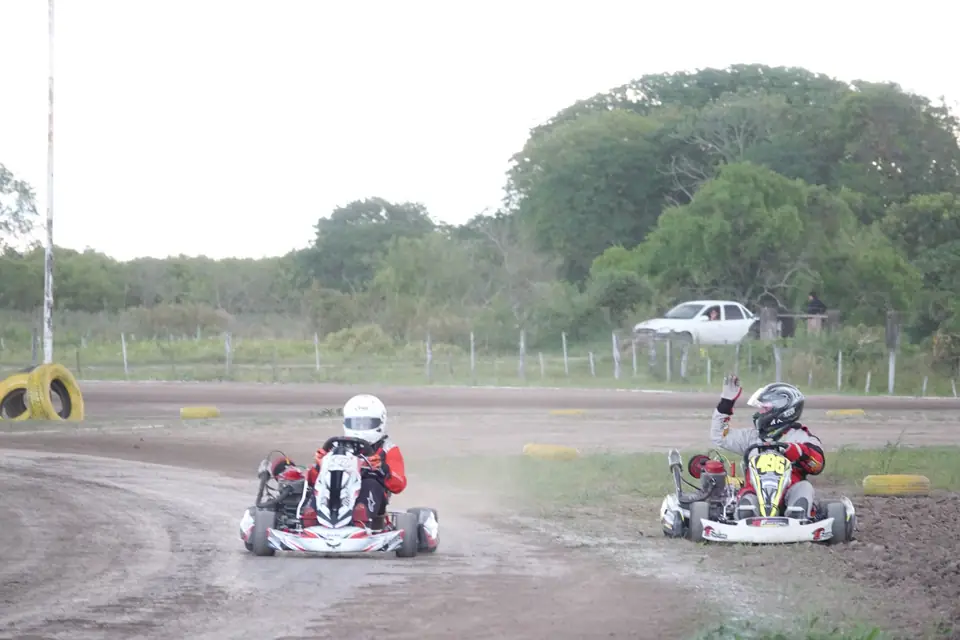
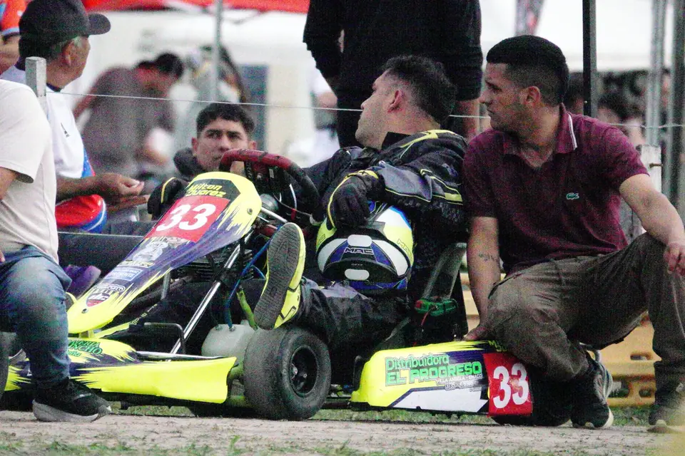

01
Pista de tierra
Trazado de tierra delimitado con cubiertas, con curvas lentas y rápidas donde se define cada carrera.

La Leonesa, Chaco
El trazado
Clima · Fecha 6 · 08 NOV
Consultando el pronóstico…
° / °
El pronóstico del día de carrera aparece unos días antes de la fecha.
El predio
Trazado de tierra delimitado con cubiertas, con curvas lentas y rápidas donde se define cada carrera.

Espacio para que cada equipo arme su carpa, prepare el kart y acompañe al piloto durante la fecha.

Zona de formación antes de cada largada, con los karts ordenados y listos para entrar a pista.

Área de control técnico al final de la carrera, bajo la supervisión de la organización.
Ubicación
La Leonesa, Chaco, Argentina. Abrí el mapa para ver el recorrido desde donde estés.